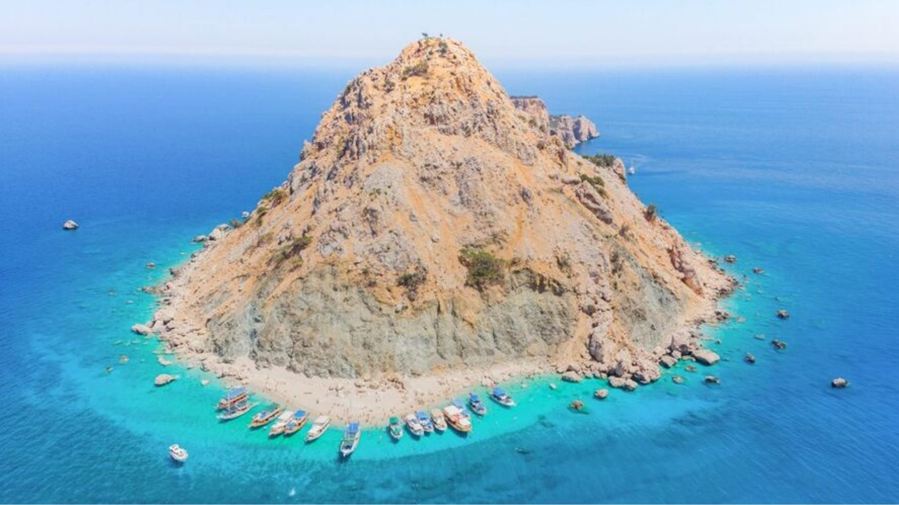

En hızlı iletişim yolu. Tarih, kişi sayısı ve isteklerinizi yazın; kısa sürede yanıt alın.
İletişim
Rezervasyon ve bilgi için hızlı iletişim kanalları.
Tarih, kişi sayısı veya herhangi bir sorunuz için aşağıdaki kanallardan ulaşın. Seyir sırasında telefon çekmeyebilir — WhatsApp mesajı bırakırsanız en kısa sürede dönüş yapılır.

Hızlı Dönüş
WhatsApp mesajlarına genellikle 1 saat içinde yanıt verilir.
Ulaşın
Size en uygun kanalı seçin.
Telefon
Seyir saatleri dışında doğrudan arayabilirsiniz. Seyir sırasında telefon çekmeyebilir.
Konum
Adrasan, Kumluca — Antalya. Tekne turu kalkış noktası ve Eylül Apart için haritaya bakın.
Bilgilendirme
Mesaj bırakmadan önce bilinmesi gerekenler.
Seyir sırasında telefon çekmeyebilir
Tekne denizdeyken GSM sinyali zayıflayabilir. WhatsApp mesajı bırakmanız daha hızlı dönüş almanızı sağlar.
Mesajınıza şunları ekleyin
Tarih, kişi sayısı (yetişkin / çocuk), istediğiniz tur türü (Suluada / Özel). Bu bilgilerle çok daha hızlı yanıt alırsınız.
Erken rezervasyon önerilir
Yoğun sezonda (Haziran–Eylül) hem tekne hem apart kapasitesi hızlı doluyor. Planladığınız tarihin en az 1 hafta öncesinde yazmanızı öneririz.
İptal ve değişiklik
Rezervasyon koşulları ve iptal politikası hakkında WhatsApp üzerinden bilgi alabilirsiniz.
Konum
Adrasan, Kumluca — Antalya
Antalya Havalimanı'na yaklaşık 2 saat mesafede, Taurus Dağları'nın eteğinde sakin bir koy.